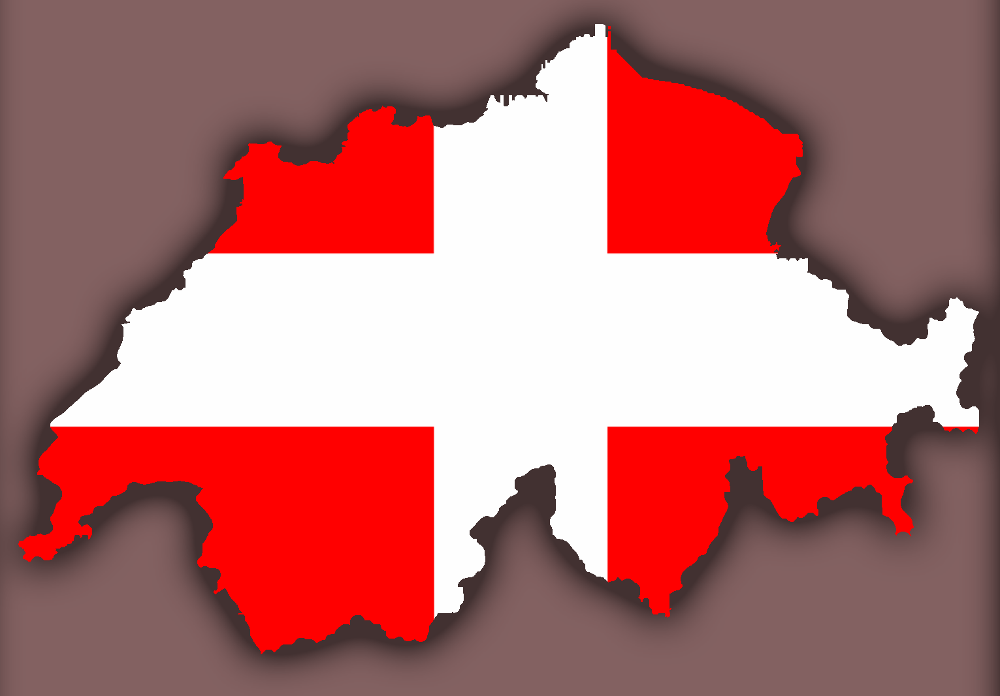

The Surface of 16 Psyche
!!! CAUTION !!!
Your team is going to need to prepare for long days of hiking, as the asteroid's surface
area is approximately 165,800 square kilometers.
This potato-like asteroid is 173 miles wide, and 144 miles long
As Psyche is about the same size as the state of Maryland, your team needs to be
in optimal health, as your team will need to explore the entirety of the asteroid in just one year.
Materials
Up until recently, the scientific consensus was that the asteroid Psyche consisted mostly of metal.
The more recent data indicates that the asteroid is possibly a mix of metal and silicate, the same
material found in glass and sand.
The best analysis indicates that Psyche is likely made of a
mixture of rock and metal, with metal composing 30% to 60% of its volume.
Surface Features
Scientists, through the combining of radar and optical observations, have generated a 3D model of Psyche,
which is believed to have two craterlike depressions, and suggests that there may be significant
variations in the metal content and color of the asteroid over its surface.
Until the satellite, also named Psyche, begins its mission to see the asteroid Psyche up close for the
first time, we don’t know what it actually looks like.
Psyche's Dimensions
Psyche is approximately 173 miles / 278 kilometers at its widest point
Psyche is approximately 144 miles / 232 kilometers at its tallest point
Psyche's approximately the same size as the state of Maryland in the United States
Psyche's size compared to some countries
Switzerland
Psyche is slightly longer and slightly slimmer than Switzerland, however is larger when compared to square miles/kilometers.
Area measurements larger than 5 recognized countries
When looking at Psyche's area, from one side, it is bigger than the countries of Tuvalu, Nauru, Monaco, and the Vatican City.
Surface area would make it the 92nd largest country on Earth
If we were to look at Pscyhe's total surface area, it would be larger than 103 recognized countries, including Bangladesh.
Explore Psyche
Using your mouse, move your cursor over the asteroid. Hold down the left mouse button
and drag left/right, up/down to explore the asteroid.
Using your mouse's scrollwheel, you can zoom in and out.